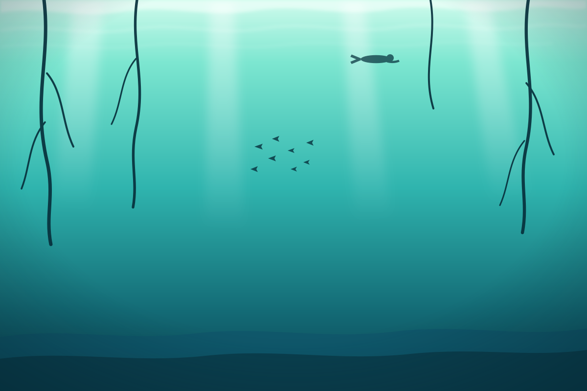

MAX 8 M · OPEN WATERFirst light
Casa Cenote and Car Wash. Open, bright, shallow — mangrove roots, a resident crocodile called Panchito, and your first halocline. The gentlest possible introduction.
from $180
2 dives